Pose Mode - Pose Menu
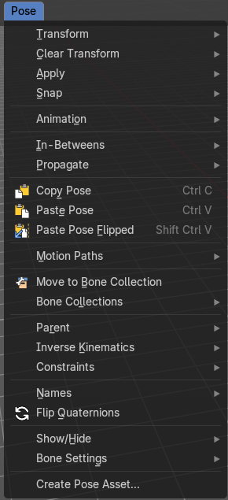
The Pose menu contains the tools to work with Armature objects in Pose mode. This means here you find all the tools that you need to pose and animate your armature.
Transform - Submenu
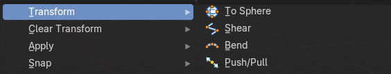
To Sphere
Shapes a selection of bones into the shape of a sphere. The calculation happens with the object origins.
Usage

Select the bones, activate the tool, then drag the mouse in the 3D viewport. In the header you will read the current factor then. Which tells you how close you are towards the sphere shape.
Last Operator To Sphere

| Entry | What it does |
|---|---|
| Factor | The factor to transform the selection into a shape form. |
| Mirror Editing | Enable mirror editing. |
Proportional editing

Enables proportional editing. Activating proportional editing reveals further settings.
| Entry | What it does |
|---|---|
| Proportional Falloff | Adjust the falloff methods. |
| Proportional Size | See and adjust the falloff radius. |
| Connected | The proportional falloff gets calculated for connected parts only. |
| Projected(2D) | The proportional falloff gets calculated in the screen space. Depth doesn't play a role. When it's in the radius, then it gets calculated. |
Shear
Shear shears the selection.
In Object mode this tools requires to have more than one object selected.
The shear tool works along a imaginary 2d plane. The shear axis controls if the items are sheared along the x or the y axes of this plane. This is the plane along which the transformation happens. You can shear along the x or the y axis of this plane.
To make things even more complicated, the orientation of this imaginary plane is defined by the Axis and Axis Ortho items below.
Last Operator Shear

Offset
Adjust an offset.
Axis

Defines one axis of the imaginary shear axis plane.
Axis Ortho
Defines the other axis of the imaginary shear axis plane.
Orientation

Choose the orientation for the shear action.
Mirror Editing
Enable mirror editing.
Proportional editing
Enables proportional editing. Activating proportional editing reveals further settings.
| Entry | What it does |
|---|---|
| Proportional Falloff | Adjust the falloff methods. |
| Proportional Size | See and adjust the falloff radius. |
| Connected | The proportional falloff gets calculated for connected parts only. |
| Projected(2D) | The proportional falloff gets calculated in the screen space. Depth doesn't play a role. When it's in the radius, then it gets calculated. |
Bend
Bends the selection.
Push/Pull
It pushes or pulls the object positions relative to the center of the selection.
In Object mode this tool requires to have more than one object selected.
Last Operator Push/Pull

| Entry | What it does |
|---|---|
| Distance | Adjust the distance of influence of the tool. |
| Mirror Editing | Enable mirror editing. |
Proportional editing
Enables proportional editing. Activating proportional editing reveals further settings.
| Entry | What it does |
|---|---|
| Proportional Falloff | Adjust the falloff methods. |
| Proportional Size | See and adjust the falloff radius. |
| Connected | The proportional falloff gets calculated for connected parts only. |
| Projected(2D) | The proportional falloff gets calculated in the screen space. Depth doesn't play a role. When it's in the radius, then it gets calculated. |
Clear Transform - Submenu
Clear Transform
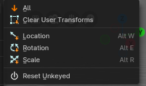
Clear transform is a menu with some Clear functionality. You need to have the bones selected where you want to perform the operation. Unselected bones will not be calculated.
| Entry | What it does |
|---|---|
| All | Resets location, rotation and scale back to the Rest pose. |
| Clear User Transforms | Resets Pose of selected bones back to keyframe state. |
| Location | Resets location back to the Rest pose. |
| Rotation | Resets rotation back to the Rest pose. |
| Scale | Resets scale back to the Rest pose. |
Reset Unkeyed
Resets the pose for the selected bones back to the state of the latest keyframe.
Last Operator Clear User Transforms
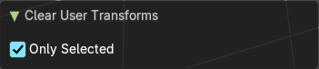
Only Selected
Clear User transform for selected armature part, or for the whole armature.
Apply - Submenu
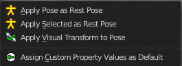
Apply is a menu with some Apply functionality.
Apply Pose as Rest Pose
You need a rest pose where you can reset the pose back to. With this tool you can set the current pose to be the new Rest pose.
Apply Selected as Rest Pose
You need a rest pose where you can reset the pose back to. With this tool you can set the current pose of the selected bones to be the new Rest pose.
Last Operator Apply Pose as Rest Pose
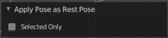
Selected only
Just apply the pose to the selected part.
Apply Visual Transform to Pose
Apply final constrained position of posed bones to their transform.
Assign Custom Property Values as Default
Assigns the current values of custom properties as their defaults. This allows to use them as part of the rest pose state in NLA track mixing.
Last Operator Assign Custom Property Values as Default
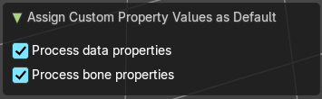
| Entry | What it does |
|---|---|
| Process data properties | Include the process data properties. |
| Process bone properties | Include the process bone properties. |
Snap - Submenu

Choose several methods to snap one element to another. The menu items should be self explaining.
Last Operator Snap Selection to Cursor
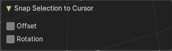
Some snap operations shows a last operation panel, some not.
Offset
If the selection should snap as a whole, or if each individual element of the selection should snap.
Animation - Submenu
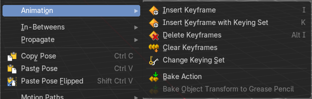
Animation is a sub menu around animation functionality. You need to have an object in the scene.
Insert Keyframe
Inserts a keyframe with the default keying set. The settings of the default keying set can be found in the properties.
Insert Keyframewith Keying Set
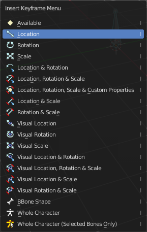
Opens a menu where you can insert a keyframe with a defined keying set.
| Entry | What it does |
|---|---|
| Delete Keyframes | Deletes keyframes at the current frame. |
| Clear Keyframes | Deletes all keyframes. |
| Change Keying Set | Opens a menu where you can change the keying set. It is basically the same than the insert keyframe menu. |
| Bake Action | Bake all selected objects location/scale/rotation animation to an action. |
| Bake Object Transform to Grease Pencil | Only works on Mesh objects. |
In-Between - Submenu
In Between
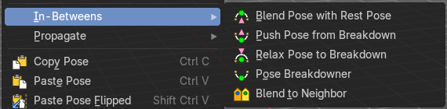
In Between are tools to influence the look of the pose between the keyframes.
For example, record a keyframe at frame 1, then record a keyframe at frame 20. Then go to frame 10, and activate one of the tools. Now you can play around with the settings. And when you are satisfied with the result then you can record a keyframe at this position.
Header values

When you activate one of the tools, then you will see a percentage slider in the header. This slider is not interactive. It just displays the percentage of the exaggeration.
Footer hotkey display
In the footer you will some hotkeys for further options. This hotkeys are hard coded, and cannot be changed in the input manager.

The hotkeys W, E and R stands for the usual transform modes move, rotate or scale. Hotkey B stands for Bendy Bones. And C is for a custom property.

Overshoot allows you to go over the 0 -100 per cent range. The header values shows a bigger range then.
The rest of the hotkeys should be self explaining.
Blend Pose with Rest Pose
Blends the current pose iwth the rest pose.
Last Operator Blend Pose with Rest Pose
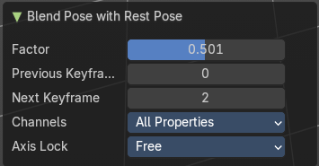
| Entry | What it does |
|---|---|
| Factor | The percentage of exaggeration. |
| Previous Keyframe | The keyframe position before the current frame. |
| Next Keyframe | The keyframe position after the current frame. |
Channels
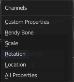
Limit the push effect to specific channels.
Axis Lock
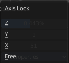
Limit the push effect to specific axis.
Push Pose from Breakdown
Exaggerates the current pose. Pushes the current pose further away from the previous pose.
Last Operator Push Pose
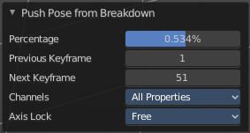
| Entry | What it does |
|---|---|
| Percentage | The percentage of exaggeration. |
| Previous Keyframe | The keyframe position before the current frame. |
| Next Keyframe | The keyframe position after the current frame. |
Channels
Limit the push effect to specific channels.
Axis Lock
Limit the push effect to specific axis.
Relax Pose to Breakdown
Relaxes the current pose.
Last Operator Relax Pose to Breakdown
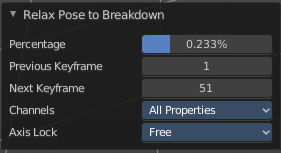
| Entry | What it does |
|---|---|
| Percentage | The percentage of relaxing. |
| Previous Keyframe | The keyframe position before the current frame. |
| Next Keyframe | The keyframe position after the current frame. |
Channels
Limit the relax effect to specific channels.
Axis Lock
Limit the relax effect to specific axis.
Pose Breakdowner
Creates a suitable breakdowner pose on the current frame.
Last Operator Pose Breakdowner
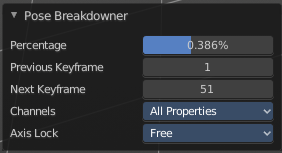
| Entry | What it does |
|---|---|
| Percentage | The percentage of exaggeration. |
| Previous Keyframe | The keyframe position before the current frame. |
| Next Keyframe | The keyframe position after the current frame. |
Channels
Limit the breakdowner pose to specific channels.
Axis Lock
Limit the breakdowner pose to specific axis.
Blend to Neighbour
Blends the current pose with the neighbouring poses.
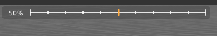
When you perform the tool then you will see a per cent slider in the header where you can read the percentual influence of the blending. Move the mouse to position the blend pose where you need it.
Last Operator Blend to Neighbour
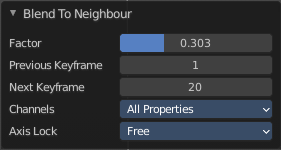
| Entry | What it does |
|---|---|
| Factor | The blend factor. |
| Previous Keyframe | The keyframe to calculate from before the current position. |
| Next Keyframe | The keyframe to calculate from after the current position. |
Channels
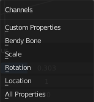
Axis Lock
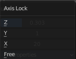
Lock the transformation along an axis.
Propagate - Submenu
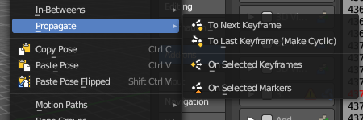
The Propagate tool automates the process of copying and pasting between keyframes. It copies the pose of the selected bones on the current frame over to the keyframes by the chosen Termination mode in the Last Operator Propagate Pose.
The different Propagate methods can be adjusted in the Last operator too. Here you will find even more methods. The menu just lists the common ones.
The methods are quite self explaining, but are explained in the last operator section.
Usage example with Termination mode "On Selected Keyframes".
- Create a little armature.
- Set a keyframe at frame 0.
- Set a keyframe at frame 20.
- Pose frame 20.
- Set a keyframe at frame 40. It will most probably be identical with Frame 20.
- Now select those Keyframes at position 40 in the Dope Sheet Editor.
- Set position to Frame 0.
- Press Propagate, and in the Last operator Propagate Pose choose On Selected Keyframes.
The selected keyframes at frame 40 will now turn into the corresponding keyframes from position 0.
Last Operator Propagate Pose
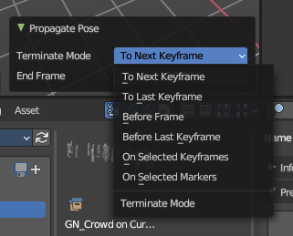
| Entry | What it does |
|---|---|
| Terminate Mode | A drop down box where you can choose between different termination modes for Propagate. · To Next Keyframe: Copies the pose to the first keyframe after the current frame. · To Last Keyframe: Replaces the last keyframe. · Before Frame: Copies to all keyframes between current frame and the End frame option. · Before Last Keyframe: To all keyframes from current frame until no more are found. · On Selected Keyframes: Applies the pose of the selected bones to all selected keyframes. · On Selected Markers: Copies to all keyframes on frames with Scene Markers after the current frame. |
| End Frame | Defines the end frame for the Propagate. |
Single Operators
Copy Pose
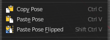
Copies the current pose. You copy what you have selected.
Paste Pose
Pastes a previous copied pose.
Paste Pose Flipped
Pastes a previous copied pose, but flipped along X axis.
Last Operator Paste Pose
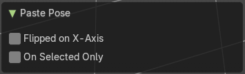
| Entry | What it does |
|---|---|
| Flipped on X Axis | Paste the pose flipped along X Axis. |
| On Selected Only | Paste just on the selected bones. Not on the unselected. |
Motion Paths - Submenu
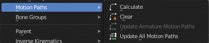
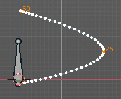
Objects can be animated. Let's say you send them from a to b to c. The object will move to b, then to c. Some kind of a path. This path is not visible by default.
With motion paths you can calculate this path, and make it visible.
Calculate
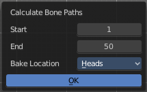
Calculates the motion path of the selected bones. It opens a panel to define the start and end frame of the calculation.
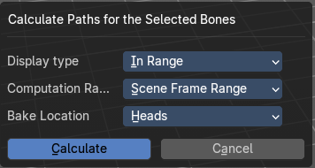
Calculate Motion path calls a setup dialog.
Display Type
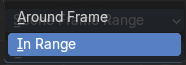
How to display the motion path.
| Entry | What it does |
|---|---|
| Around Frame | Display paths of poses within a fixed number of frames around the current frame. |
| In Range | Display paths of poses within specified frames. |
Computation Range
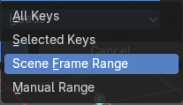
How much frames to compute.
| Entry | What it does |
|---|---|
| All Keys | From the first keyframe to the last. |
| Selected Keys | From the first selected keyframe to the last. |
| Scene Frame Range | The entire scene / preview range. |
| Manual Range | Manually determined frame range. |
Bake Location
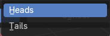
To bake from where.
| Entry | What it does |
|---|---|
| Heads | Calculate bone paths from heads. |
| Tails | Calculate bone paths from tails. |
Last Operator Calculate Bone Paths
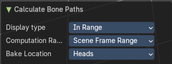
Same than the dialog.
| Entry | What it does |
|---|---|
| Clear | Clear remove the motion path from the object. |
| Update Armature Motion Paths | Updates the motion paths of the armature. |
| Update All Motion Paths | Updates the motion paths of all objects. |
Move to Bone Collection

Armature and bones have their own collection system. This menu item opens a popup where you can put the selected bones into a New Collection or an existing Bone Collection.

Bone Collections is a menu to handle bone collection functionality from within a menu in the 3D View editor. The bone collections themselves can be found in the Properties editor then in the Armature tab.
| Entry | What it does |
|---|---|
| New Bone Collection | Assigns the selected bones to a new Bone Collection. This will prompt to name the new collection. |
| Bone List | Assigns or unassigns the selected bones to or from the collection. The green + icon and red – icon show if you can remove or add a bone to the listed collection. |
Bone Collections – Sub Menu

Armature and bones has its own collection system.
Add

Add or remove the bone from the listed bone collections. The green + icon and red – icon show if you can remove or add a bone to the listed collection. A bone can be in multiple collections at the same time.
| Entry | What it does |
|---|---|
| New | Assigns the selected bones to a new Bone Collection. This will prompt to name the new collection. |
| Bone List | Assigns or unassigns the selected bones to or from the collection. The green + icon and red – icon show if you can remove or add a bone to the listed collection. |
Show All
Show all bone collections.
Assign to New
Add selected bones to a new collection with a new name.
Last Operator add Selected Bones to Collection

Bone Collection
Change name of the new collection.
Parent - Submenu
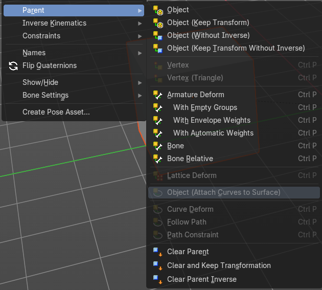
Parenting the skin or other armatures happens in Object mode. You can also parent in Pose Mode. It just does not make much sense since you need to enter Object mode for one of the objects anyways. The only somehow relevant settings in the parenting menu here is clear parent. But even this is better done in Object Mode.
The parenting menu is already explained in the Object menu in Object mode. So we won't repeat the whole description here.
Inverse Kinematics - Sub Menu
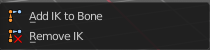
Inverse Kinematics is a menu with two isolated items from the whole bone constraints menu. The Inverse Kinematics. You could also add an Inverse Kinematics bone constraint by the Constraints / Add (With Targets) menu item from above. It is in the list. But this menu allows quick access without big search.
Add IK to Bone
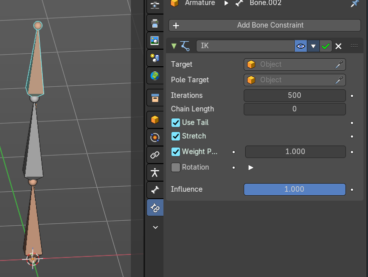
Add IK to bone adds an IK bone constraint to the selected bone. When you add an IK constraints with just the bone selected, then it adds an empty as a handler too, and fills it in as a target.
Add IK calls a popup. When you have just one bone selected then you can choose between adding an empty as the target or to create the bone constraint without target.
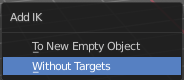
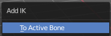
When you have more than one bone selected then you can just add the constraint to the active bone.
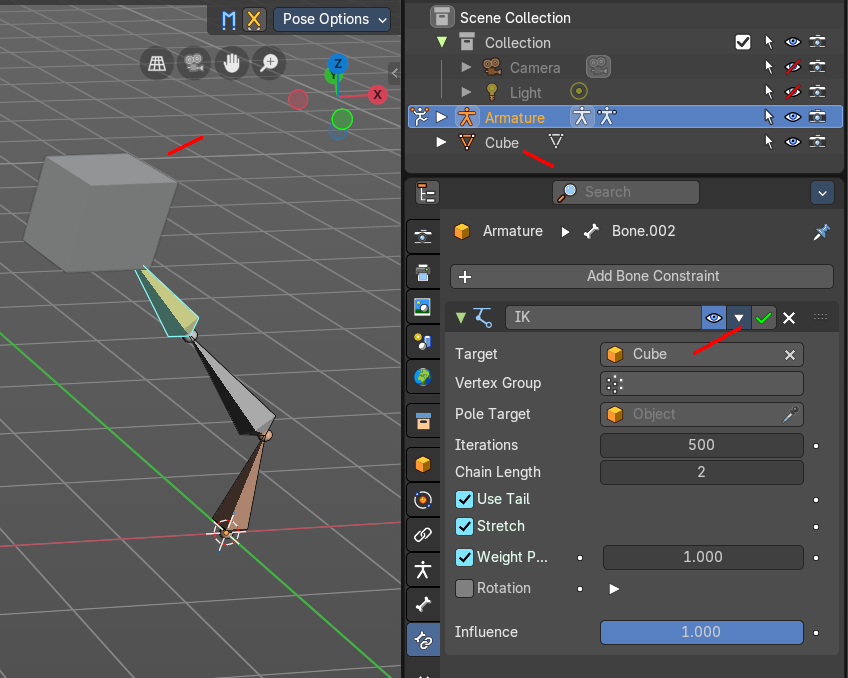
You can define an own target object too. The armature needs to be in pose mode. Let's create a cube or another primitive. Select it. Now hold down Shift, and click at the bone where you want to add the constraint too. Then choose Add (with Targets), and choose your constraint method. The cube will now be chosen as the target object.
Last Operator Add IK to Bone
With Targets
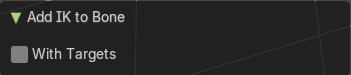
Define if you want to add the IK constraints with or without a target.
Remove IK
Removes all IK bone constraint(s) at the selected bone(s).
Constraints - Submenu
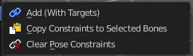
Constraints is a menu that contains some tools around constraints.
Add (With Targets)
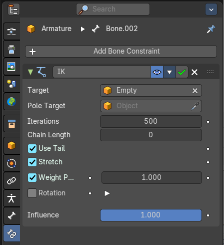
Add (With Targets) calls the Constraints menu where you can choose the constraint that you want to add. When you add an IK constraints with just the bone selected, then it adds an empty as a handler too, and fills it in as a target. Which is similar to what you can do with the Add IK to Bone from the IK menu.
But you can add more than just the IK constraint. It is the same menu that you can open by clicking at the Add Bone Constraint drop down menu in the Properties editor.
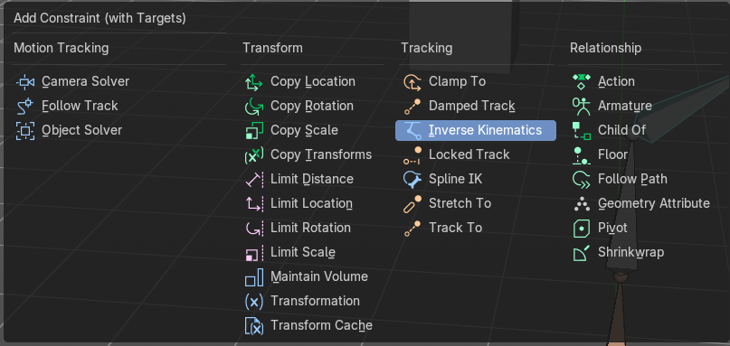
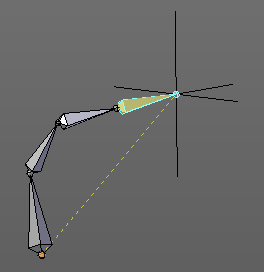
You can define an own target object too. The armature needs to be in pose mode. Let's create a cube or another primitive. Select it. Now hold down Shift, and click at the bone where you want to add the constraint too. Then choose Add (with Targets), and choose your constraint method. The cube will now be chosen as the target object.
| Entry | What it does |
|---|---|
| Copy Constraints to selected Bones | Copies the constraints with all its settings to the selected bone. Usage: Select the bone where you want to copy the constraints to. Hold down shift, then select the bone that contains the constraints. Then perform the tool. The constraints will be copied. |
| Clear Pose Constraints | Removes all bone constraints modifiers from the bone. |
Names - Submenu


Bforartists has some internal name conventions for a symmetrical armature. Bones are for example named mybone.L or mybone.R, dependant at which side of the mirror axis they are. The Names items allows you to rename the bone names to this name convention.
| Entry | What it does |
|---|---|
| Autoname Left/Right | Renames the bones from left to right. |
| Autoname Front/Back | Renames the bones from front to back. |
Autoname Top/Bottom

Renames the bones from top to bottom.
Last operator Autoname by Axis

Axis
Choose the autoname axis again. Left/Right is X axis, Front/Back is Y axis, and Top/Bottom is Z axis.
Flip Names
When you mirror a half of an armature you end in names like Bone.001.R.001. But what we need is Bone.001.L for a symmetrical armature. Flip names flips the names to follow the left right name conventions.
Last operator Flip Names
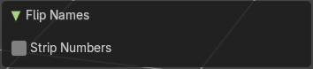
Strip Numbers
Tries to remove the numbers in the names if possible.
Flip Quats
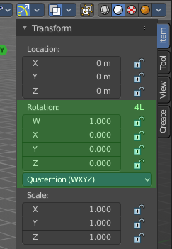
This feature flips the quaternion rotation values of the currently selected bone(s). Positive values becomes negative, and negative values becomes positive.
Show/Hide - Submenu
Show or hide the selected geometry
| Entry | What it does |
|---|---|
| Show Hidden | Makes all hidden geometry visible again. |
| Hide Selected | Hides the selected geometry. |
| Hide Unselected | Hides the not selected geometry. The selected geometry stays visible. |
Last Operator Hide Selected
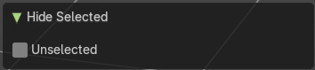
Each of the menu items uses the same Last Operator. With different strings for the booleans.
Unselected
Hide the unselected geometry instead the seleced.
Bone Settings - Submenu
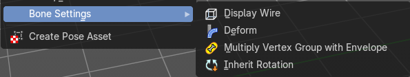
Bone Settings is a menu with menu items to toggle special check boxes in the Properties editor. But here you can do it for a selection too, and not just one object.
Last Operator Collection Boolean Set
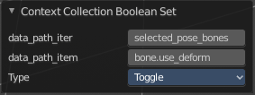
Each of the menu items uses the same Last Operator. With different strings for the booleans.
Create Pose Asset
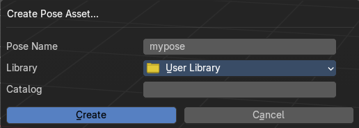
Creates a pose asset from the current armature. It calls a dialog where you can define the pose name, the library in which you want to store the pose asset, and a catalog name. The saved pose asset can be found in the library browser at the bottom then.